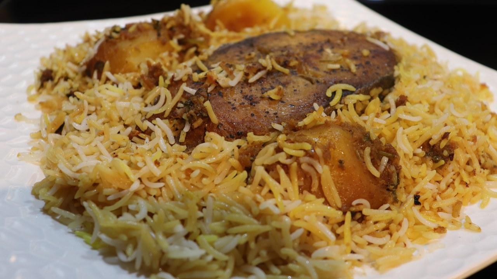

Biryani

Description
Mauritian chicken biryani is a fan favourite that requires a lot of skills and time to prepare
and as a result, is prepared for special occasions or by people who specialise in the art of making it.
Indeed, a good biryani requires the use of all of the senses and producing a good one is a work of art.
The aroma is distinctive and permeates the house as the biryani is cooking.
The Mauritian version contains potatoes and has very distinct flavours.
It is milder than an Indian or Middle Eastern biryani and is usually served
with a side of cucumber salad or pickles.
Ingredients
- 1 kg chicken
- Salt
- Yellow food colouring
- 3 cups of rice
- 8 potato pieces
- Chopped coriander
- Chopped mint
- Chilli (Optional)
- 1 tablespoon sugar
- 1 tomato
- 1 tablespoon garlic paste
- 1 tablespoon ginger paste
- Half Onion
- 7 cardamom pods
- 6 clove sticks
- 2 tablespoon + 1 teaspoon cumin seed
- 1 tablespoon garam masala
- 1 cinnamon stick
- 2.5 cup water
- Half cup of oil
- Bay leaves
- Fried Onion
Cooking Instructions
- Marinate chicken with salt and yellow food colouring. Let rest.
- Wash and soak rice.
- Add salt and yellow colouring to potato.
- Parfry potatoes.
- Blend spices with 1 cup of water, sugar and tomato.
- Add blended to fried onions, mint and coriander. Mix well.
- Add mixture to chicken and potato
- Add in 1.5 cup of water and half cup of oil. Let rest.
- Add bay leaves, 1 teaspoon of salt and 1 teaspoon of cumin to rice.
- Parcook rice.
- Add some chicken and potato as first layer in cooking utensil.
- Then, add some rice as second layer.
- Continue this operation until all ingredients in utensil.
- Top with fried onions and food colour or saffron.
- Cover and seal with aluminium foil.
- Cook for first 5 mins on high setting.
- Cook for the remaining 15/20 mins on medium.
- Serve with a salad.